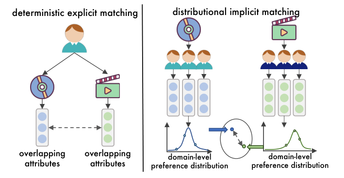
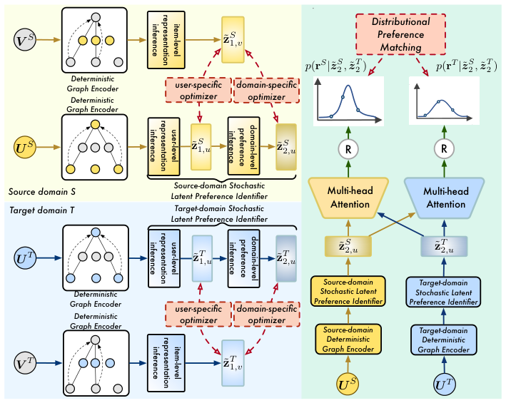

Distributional Domain-Invariant Preference Matching for Cross-Domain Recommendation (面向跨域推荐的分布域不变偏好匹配)
- 会议/期刊: ICDM 2023（9 页正文，5 图）
- 作者与机构: Jing Du*, Zesheng Ye*（共同一作）, Bin Guo, Zhiwen Yu, Lina Yao† — UNSW、西北工业大学、CSIRO Data61
- 推荐链路定位: 召回（冷启动跨域用户表征与 Top-K 检索）
- 研究方向: 跨域与多场景推荐 / 冷启动推荐
- 论文原文: https://arxiv.org/abs/2309.01343v1
- 开源代码: 暂未开源
TL;DR (1分钟核心速览)
跨域推荐（NOCDR）中两个域既无重叠用户也无重叠物品时，现有方法要么依赖评论/标签等辅助信息，要么在采样个体之间做确定性显式表征对齐，个体采样偏差会让模型抓不住群体共性偏好。本文把域内偏好建模为连续先验分布，用分层变分后验（用户级 \(q(z_1|\tilde{h})\)→ 域级\(q(z_2|z_1,\tilde{h})\)）逐级逼近，再把源/目标两个视角下"域不变偏好"的预测分布用对称 JS 散度对齐，形成分布隐式匹配；辅以两个 VIB 优化器保证表征的紧致性与跨域泛化。在 Amazon 八类构成的 4 组冷启动 NOCDR 任务上，全库排序 Full-Ranking 协议下 MRR、NDCG@10 相对最优基线 CRDIB 提升 21.6%–34.9%。
Background & Motivation (背景与核心矛盾)
- 主流范式: CDR 分 OCDR（有重叠用户/物品，靠 Embedding-and-Mapping 或元网络 PTUPCDR 学习个性化桥接函数）与 NOCDR（无重叠，靠评论/标签/社交行为等辅助信息做替代性对齐，或把评分模式压进 codebook 做簇级显式映射）。
- 前人局限: ① 所有替代方案都要向用户/物品索取额外数据（reviews、tags、rating patterns），在只有 user-item 交互的最严苛 NOCDR 场景直接失效；② 对齐本质是"采样个体间的确定性显式匹配"，只能刻画个体差异，采样偏差使其无法纳入偏好的连续性与群体普适性。
- 核心洞察 (Key Insight): 推荐面向大众，不同域的用户行为虽零散，但背后应共享一条稳定的潜在偏好分布 \(p(z)\)。若把用户表征视为该分布的 i.i.d. 观测，则跨域迁移就退化为"两个域对该隐不变偏好的解释是否一致"——这是分布层面的问题，而非个体配对问题。
- 本文切入点: 用分布隐式匹配替代显式个体匹配，以随机用户组的 Monte-Carlo 采样自然降低采样偏差。

Method (核心方法设计)
1. 整体框架 (Overall Architecture)
DPMCDR 是一个双向对称的跨域生成模型。先在源域 \(G^S\)与目标域\(G^T\)上各跑一个确定性图编码器，从交互二部图中得到用户/物品的确定性表征\(\tilde{h}\)；随后随机隐偏好识别器以两层级联高斯后验把\(\tilde{h}\)抽象为用户级隐表征\(\tilde{z}_1\)与域级偏好\(\tilde{z}_2\)；分布偏好匹配用不同的查询顺序生成源视角与目标视角下的域不变偏好预测分布\(p(r^S|\tilde{z}^S_2,\tilde{z}^T_2)\)与\(p(r^T|\cdot)\)，并在共享潜空间用 JS 散度对齐；最后两类 VIB 优化器分别约束\(\tilde{z}_1\)与\(\tilde{z}_2\) 成为预测跨域交互的极小充分统计量。推理时直接取目标域新用户的表征做全库内积打分。
flowchart TD
A["源域/目标域 用户-物品二部图"] --> B["确定性图编码器：两跳同质邻居聚合"]
B --> C["随机隐偏好识别器：q(z1|h) → q(z2|z1,h)"]
C --> D["分布偏好匹配：源/目标双视角 p(r|z) + JS 散度"]
D --> E["VIB 用户级 / 域级优化器：跨域 BCE 重构"]
E --> F["冷启动目标域 Top-K 排序"]
2. 关键设计拆解 (Key Designs)
- 两跳同质图编码器（Homogeneous-Hop Aggregation）：交互二部图上相邻的只有异质节点，直接套一层 GCN 会把人-物异质信息混进来。本文只让用户连用户、物品连物品，通过 \(A\top\) 二次折返实现两跳聚合：
直觉是：\(A^{\top}U\)先按"共同物品"把用户加权求和，\(A\)再折返回来，等价于在同质用户图上做一跳传播，避免异质噪声污染表征；高阶层用\((\tilde{E}^{(k-1)}\|\tilde{E}^{(k-2)})\) 拼接缓解过平滑。
- 分层随机隐偏好识别器（Stochastic Latent Preference Identifier）：个体表征是采样结果、不足以代表群体。作者设 \(p(z) = \prod_{l}p(z_l|z_{<l})\)、取\(L=2\) 层，用摊销推断（MLP 出均值/方差）逐级近似：
第二层的 \(\tilde{z}_2\in\mathbb{R}^{N\times d}\)才是"域级偏好"，由\(N\) 个随机用户的整组表征参数化——这正是消除个体采样偏差的关键算子。
- 分布偏好匹配 + VIB 双向优化：把 \((\tilde{z}^S_2\|\tilde{z}^T_2)\)与反向拼接分别线性映射后过 multi-head self-attention，得到源驱动/目标驱动的\(\dot{r}^S,\dot{r}^T\)，再各自参数化为高斯\(p(r^S|\tilde{z}^S_2,\tilde{z}^T_2)\)、\(p(r^T|\tilde{z}^S_2,\tilde{z}^T_2)\)。匹配损失取对称 JS（即双向 KL）：
对称形式保证 S→T 与 T→S 双向可迁移；因为对齐的是分布而非个体，个体的采样噪声在对 \(N\) 个用户的期望中被平均掉。
- 训练目标、负采样与推理效率：用户级优化器 \(\mathcal{L}^S_u\)在 VIB 约束下最大化\(\tilde{z}_{1,u},\tilde{z}_{1,v}\)与\(A^S\)的互信息、同时用 KL 上界压缩其对初始 embedding 的依赖；域级优化器\(\mathcal{L}_d\)把\(\tilde{z}^S_2\)与目标域交互\(A^T\)的互信息也纳入（对角拼接矩阵\(A^{ST}\)），强制域级偏好跨域可预测。总损失为\(\mathcal{L} = \mathcal{L}_m + \mathcal{L}_d + \mathcal{L}^S_u + \mathcal{L}^T_u\)，\(g(\cdot,\cdot)\)取内积 + BCE，全库成对 BCE 训练、无需负采样。复杂度\(O\big(k(|S|^2+|T|^2)+6N+|V^S|+|V^T|+2hk^2d^2\big)\)，随机采样项与\(N\) 线性、可 GPU 并行。
Experimental Setup & Evaluation Protocol (实验设置与评估协议)
- 数据集与预处理: Amazon Review 8 个品类，两两配对成 4 组跨域场景。过滤：物品交互 \(<10\)、用户交互\(<5\) 均剔除；训练仅用非重叠用户。
| 数据集 | #Users | #Items | #Interactions | #非重叠用户 | 测试新用户 | 平均序列长 |
|---|---|---|---|---|---|---|
| Cellphone | 27,519 | 9,481 | 156,581 | 11,182 | 2,049 | 14.02 |
| Electronic | 107,984 | 40,460 | 795,799 | 100,127 | 2,042 | 7.95 |
| Cloth | 41,829 | 17,943 | 180,545 | 33,972 | 990 | 5.31 |
| Sport | 27,328 | 12,656 | 160,482 | 19,471 | 981 | 8.24 |
| Game | 25,025 | 12,319 | 144,305 | 23,288 | 226 | 6.20 |
| Video | 19,457 | 8,751 | 145,798 | 17,720 | 217 | 8.23 |
| Music | 50,841 | 43,858 | 685,138 | 35,760 | 1,893 | 19.16 |
| Movie | 87,875 | 38,643 | 1,119,358 | 72,794 | 1,885 | 15.38 |
- 数据划分与防穿越: 冷启动划分——按 20% 划出验证/测试用户，其余（非重叠）用户用于训练；测试用户的真值交互只用于评估，不参与训练。
- 排名评测协议: 无偏
Full-Ranking（目标域全库未交互物品排序），指标 MRR、HR@{10,20,30}、NDCG@{10,20,30}；5 个随机种子取均值 ± 标准差，配对 t-test 检验（\(p<0.05\)，表中标*）。 - 对比基线与超参: 单域 MF / Caser / IDNP；跨域 CMF / EMCDR-MF / EMCDR-NGCF / PTUPCDR / DisenCDR / CRDIB（共 9 个）。GCN 层数 \(k=3\)，dropout\(0.3\)，\(d\in\{16,32,64,128\}\)，warm-up epoch\(\in\{10,\dots,50\}\)，\(\beta\in\{0.5,\dots,3\}\)，采样组规模\(N\in\{64,\dots,1024\}\)，batch 1024，Adam lr\(10^{-3}\)，最多 70 epoch 收敛。
Key Experimental Results (实验关键数据)
1. 主实验对比 (Main Results)
以 Cellphone→Electronic 与 Game→Video 两组场景为例（数值为百分数 %，加粗为最优）：
| 方法 | Electronic MRR | NDCG@10 | NDCG@30 | HR@10 | HR@30 | Video MRR | NDCG@10 | NDCG@30 | HR@10 | HR@30 |
|---|---|---|---|---|---|---|---|---|---|---|
| MF | 1.67 | 1.31 | 2.60 | 3.39 | 4.43 | 2.53 | 1.98 | 2.86 | 2.13 | 4.81 |
| Caser | 1.32 | 1.67 | 2.29 | 1.30 | 3.14 | 2.05 | 1.62 | 2.72 | 2.16 | 3.68 |
| CMF | 1.70 | 1.13 | 1.57 | 2.34 | 5.21 | 3.28 | 2.82 | 4.78 | 3.21 | 6.28 |
| EMCDR-NGCF | 3.14 | 3.20 | 5.05 | 5.09 | 12.11 | 1.90 | 1.62 | 2.64 | 3.65 | 8.59 |
| PTUPCDR | 5.94 | 6.47 | 9.30 | 11.30 | 14.95 | 2.32 | 2.07 | 3.95 | 4.86 | 8.69 |
| DisenCDR | 6.88 | 7.06 | 8.72 | 11.12 | 18.15 | 2.15 | 1.91 | 3.20 | 5.12 | 9.54 |
| CRDIB | 8.48 | 9.65 | 13.05 | 17.19 | 31.61 | 4.20 | 4.37 | 6.65 | 7.57 | 17.30 |
| DPMCDR* | 10.31 | 11.51 | 15.01 | 20.20 | 35.08 | 5.11 | 5.56 | 7.93 | 10.72 | 21.07 |
| Improv.% | 21.58 | 19.27 | 15.02 | 17.51 | 10.98 | 21.67 | 27.23 | 19.25 | 41.61 | 21.79 |
另两组：Cloth-Sport 上 MRR 提升 18.57% / 6.73%，Music-Movie 上 MRR 提升 25.90% / 28.27%，四个场景 28 个指标全部最优。
2. 消融实验 (Ablation Study)
Game-Video 场景（图 4）的四级递进变体：
| 变体 | 图编码器 | 用户级 \(q(z_1)\)+ 用户优化器 | 域级\(q(z_2)\) + 分布匹配 | VIB 域级优化器 | 相对表现 |
|---|---|---|---|---|---|
| (A) | ✓ | ✗ | ✗ | ✗ | NDCG@30 ≈ 6.32 / HR@30 ≈ 17.96，已超除 CRDIB 外所有 CDR 基线 |
| (B) | ✓ | ✓ | ✗ | ✗ | 明显优于 (A) |
| (C) | ✓ | ✓ | ✓ | ✗ | 全部变体中最差，无预测目标时域级偏好无法被合理导出 |
| (D) | ✓ | ✓ | ✓ | 仅用户级 | 显著优于 (C)，但仍不及完整模型 |
| 完整 | ✓ | ✓ | ✓ | ✓ | 所有指标最优 |
3. 关键实验发现 (Key Findings)
- 分布匹配是主要增益源，而非更强编码器：仅保留图编码器的 (A) 变体 NDCG@30 已达 6.32、HR@30 已达 17.96，优于除 CRDIB 外所有跨域基线；而移除 VIB 域级优化器的 (C) 反而成为全场最差——说明"先建分布、再谈对齐"的顺序不可颠倒，没有交互监督锚定的域级偏好只是噪声。
- OCDR 场景同样不掉队：在 15% 用户重叠的部分重叠设定（表 III）下，DPMCDR 未使用任何重叠信息却仍超过专门为 OCDR 设计的 CRDIB 与 DisenCDR，Cellphone-Electronic 的 MRR 分别提升 7.03% / 13.68%，Sport 提升 19.61%，说明分布隐式匹配不是"退而求其次"的替代品。
- 与 VIB 系基线同源但更强：同为信息瓶颈路线，CRDIB 在 Electronic 上 HR@30 为 31.61，DPMCDR 达 35.08；差距主要来自把 VIB 从"节点级表征"扩展到"域级分布"，即 \(\mathcal{L}_d\) 中的跨域重构项——这让域级偏好本身具备跨域可预测性，而不仅是压缩性。
Highlights & Limitations (亮点、对比与审稿批判)
- 与代表作对比 (vs. Prior Work): 相比 PTUPCDR（元网络生成个体桥接函数，必须有重叠用户）与 DisenCDR/CDRIB（依赖解耦表征 + 互信息过滤，本质仍是节点级显式对齐），本文把对齐单元从"节点"上移到"分布"；相比依赖 reviews/tags 的 NOCDR 方法（如属性对齐），本文只要求交互矩阵，适用面更宽。
- 可迁移亮点: ① 两跳同质聚合 \(A\Phi(A^\top UW)W'\) 是一行代码即可移植的二部图异质噪声抑制技巧；② "warm-up 后再接入分布匹配损失"的训练调度（图 5 显示无 warm-up 时匹配项会伤害性能）对所有多阶段对齐类模型都适用。
- 审稿级局限批判: ① 复杂度含 \(O(k(|S|^2+|T|^2))\)项，Electronic（10 万用户）级别的域上训练开销不可忽视，论文未给实际 wall-clock 对比；② 域级分布假设为对角高斯且需阅读全量交互才能参数化，"新用户零交互"的 strictly cold-start 场景实际仍依赖其所属域的群体分布，个体层面收益未单独分桶验证；③ 超参\(\beta\)与\(N\)在不同场景最优值差异明显（Cloth-Sport 最优\(\beta=2.5\)，Cellphone-Electronic 反被该值拖累），跨域泛化到多域（>2）时负迁移风险论文仅列为 future work。
Rating (四维评分)
- 方法创新性 (Novelty): ⭐⭐⭐⭐ （把跨域对齐从确定性个体匹配重构为域级分布的 JS 对齐，分层变分 + 双向对称 KL 的组合在 NOCDR 中属首次，动机链条清晰）
- 评估协议与实验扎实度 (Protocol & Experiments): ⭐⭐⭐⭐ （8 个 Amazon 品类、4 组场景、28 个指标全胜，Full-Ranking + 5 seed + t-test 规范；扣分在于未给出按稀疏度/新用户的分桶细粒度分析）
- 写作与数学规范度 (Clarity & Rigor): ⭐⭐⭐⭐ （图模型、VIB 上下界推导完整，式 (8)(12) 的变分近似交代清楚；但部分符号在正文与图中不一致，消融图未标具体数值）
- 工业落地与复现价值 (Industrial & Practical Value): ⭐⭐⭐ （无需辅助信息、可双向单次训练是工程优势，但 \(|S|^2\) 复杂度与全库 BCE 训练对超大规模域不友好，且未开源代码）